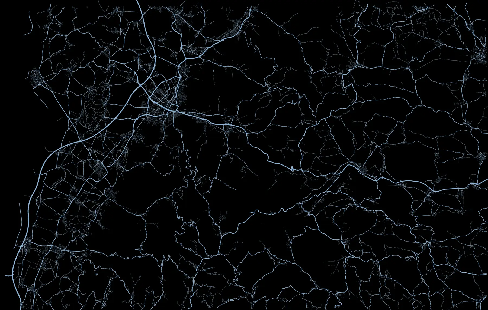

Leitstellensimulator für Freiburg und den Breisgau-Hochschwarzwald Notrufe annehmen. Einsätze disponieren.
Am Telefon sprechen KI-Anrufer mit dir – aufgeregt, ängstlich, manchmal ungeduldig. Du fragst ab, legst den Einsatz an und schickst die passenden Fahrzeuge los. Auf der Karte fahren sie mit Blaulicht zum Einsatzort.
Anrufer, Stimmen und Simulation laufen auf deinem eigenen Rechner, ohne Cloud.
Ein privates Hobbyprojekt – kein offizielles Produkt und ohne Verbindung zur Integrierten Leitstelle Freiburg.
Demo-Einsatz · KI-generierte Stimmen
Eine Schicht in der Leitstelle, an deinem Schreibtisch
-
Notrufe zum Sprechen
KI-Anrufer reden mit dir – aufgeregt, ängstlich, manchmal ungeduldig. Oder du schreibst im Gespräch.
Mehr zu den Notrufen →KI-generierte Stimmen, Demo-Einsatz

-
191Standorte477Fahrzeuge
Das ganze Leitstellengebiet
Freiburg und der Breisgau-Hochschwarzwald mit über 190 Standorten und rund 480 Fahrzeugen.
Wachen und Fahrzeuge im Gebiet → -

Luftbild und Kartenebenen
Karte oder Luftbild, dazu zuschaltbar Hydranten, Defibrillatoren, Pflegeheime und Kindergärten, Bahnübergänge, Tunnel, Bahnkilometer und Flurnamen.
Luftbild und Kartenebenen → Luftbild: Datenquelle LGL, www.lgl-bw.de, Lizenz dl-de/by-2-0 -

Karte 
Einsatz 
Tableau Mehrere Bildschirme
Karte, Einsatz, Tableau, Telefon und Funk lassen sich als eigene Fenster abtrennen und auf mehrere Bildschirme legen. Das Programm merkt sich, wo sie stehen.
Fenster und Bildschirme → Luftbild: Datenquelle LGL, www.lgl-bw.de, Lizenz dl-de/by-2-0 -
Vom Notruf bis zum Einsatzende
Abfrage, Einsatzstichwort, Fahrzeugvorschlag nach Ankunftszeit und Funk.
- Abfrage
- Einsatzstichwort
- Fahrzeugvorschlag
- Funk
-
Ohne Cloud
Läuft auf deinem Rechner
Ohne Cloud – Gespräche und Protokolle bleiben bei dir.
Läuft auf deinem Rechner → -


Dein Arbeitsplatz
Fünf Designs, jedes Fenster im Vollbild, Bereiche per Griff in der Größe ändern und die Kartenzeichen von 60 bis 160 %.
Dein Arbeitsplatz → -
- Enternimmt an
- Hhält
- Aöffnet die Alarmierung
- Strg+Entererstellt und alarmiert
Schnell mit der Tastatur
Über 50 Tastenkürzel. Die Tastenhilfe zeigt alle.
Schnell mit der Tastatur →


Jede Schicht ist anders
Anrufe kommen von selbst – aus, leicht, mittel oder schwer. Die Uhrzeit wählst du beim Start. Tag und Nacht, Dienstzeiten und Schichtwechsel wirken sich aus. 83 Szenarien, weitere folgen.
So läuft ein Einsatz
Ereignisprotokoll · E-2026-000004 · AuszugDemo-Einsatz · Uhrzeiten der Simulation

- Schritt 1 von 4
Notruf annehmen
Es klingelt, du nimmst ab. Der Anrufer spricht mit dir – wo er ist, musst du erfragen.

- Notruf klingelt
- Schritt 2 von 4
Abfragen
Die Abfrage führt dich durch die Fragen, der Einsatzort steht immer zuerst. Dazu wählst du das Einsatzstichwort.

- Abfrage Einsatzort: Madisonallee (aus der Ortsangabe, Kartenpunkt, bestätigt)
- Meldebild: H3 Person in Zwangslage, Unfall eingeklemmt/verschüttet
- Einsatz E-2026-000004 angelegt: H3 Person in Zwangslage (führend), dazu Unfall eingeklemmt/verschüttet, Kartenpunkt 48.01783, 7.83702, Angabe: Madisonallee (bestätigt)
- Schritt 3 von 4
Alarmieren
Das Programm schlägt Fahrzeuge vor, sortiert nach geschätzter Ankunftszeit. Auf der Karte fahren sie mit Blaulicht los.

- Alarmiert: Rotkreuz Freiburg 01/82-03, Rotkreuz Freiburg 01/83-02, Florian Freiburg 1/46-2, Florian Freiburg 1/46-3, Florian Freiburg 1/24, Florian Freiburg 14/43, Florian Freiburg 1/52-1, Florian Freiburg 1/11-1, Florian Freiburg 1/12
- Als Einheit: Löschzug Berufsfeuerwehr (Florian Freiburg 1/11-1, Florian Freiburg 1/46-2); Kleiner Rüstzug Berufsfeuerwehr (Florian Freiburg 1/11-1, Florian Freiburg 1/52-1)
- Verständigt (Telefon): Polizei
- 3Florian Freiburg 1/46-2: Status 3 – Einsatzübernahme
- 3Rotkreuz Freiburg 01/83-02: Status 3 – Einsatzübernahme
- 4Rotkreuz Freiburg 01/83-02: Status 4 – Einsatzort
- 4Florian Freiburg 1/11-1: Status 4 – Einsatzort
- Schritt 4 von 4
Funk und Einsatzende
Die Besatzungen melden sich, wenn es etwas Besonderes gibt. Sind alle Kräfte wieder frei, endet der Einsatz von selbst.

- Funk Florian Freiburg 1/11-1: Leitstelle Freiburg von Florian Freiburg 1/11-1 – Erstmeldung: Verkehrsunfall mit zwei Pkw, eine Person eingeklemmt. Erkundung läuft. – Erste Lagemeldung: Zwei Pkw zusammengestoßen, eine Person im Fußraum eingeklemmt. Keine auslaufenden Betriebsstoffe. Keine Nachforderung. Technische Rettung läuft, Dauer etwa 5 Minuten. – kommen.
- Funk Florian Freiburg 1/11-1: Leitstelle Freiburg von Florian Freiburg 1/11-1 – Kräfte reichen. Florian Freiburg 1/12, Florian Freiburg 14/43, Florian Freiburg 1/24, Florian Freiburg 1/46-3 und Rotkreuz Freiburg 01/82-03 frei für weitere Aufträge. – kommen.
- Funk Florian Freiburg 1/11-1: Leitstelle Freiburg von Florian Freiburg 1/11-1 – Person befreit und an den Rettungsdienst übergeben. – kommen.
- 7Rotkreuz Freiburg 01/83-02: Status 7 – Einsatzgebunden (Patient aufgenommen)
- Funk Rotkreuz Freiburg 01/83-02: Leitstelle Freiburg von Rotkreuz Freiburg 01/83-02 – Patient stabil, Verdacht auf Unterschenkelbruch links. Transport Uniklinik, Unfallchirurgie. Eintreffen etwa 7 Minuten. – kommen.
- Funk Florian Freiburg 1/11-1: Leitstelle Freiburg von Florian Freiburg 1/11-1 – Hilfe geleistet, Einsatz beendet. – kommen.
- 8Rotkreuz Freiburg 01/83-02: Status 8 – Bedingt verfügbar (am Transportziel)
- 1Rotkreuz Freiburg 01/83-02: Status 1 – Einsatzbereit Funk
- Einsatz beendet – alle Kräfte frei


Leitstellengebiet: vom Rhein und Kaiserstuhl bis auf den Feldberg
Das ganze Gebiet der Integrierten Leitstelle Freiburg/Breisgau-Hochschwarzwald: Stadtkreis Freiburg und Landkreis Breisgau-Hochschwarzwald.

Alle Standorte auf dem Straßennetz des Leitstellengebiets, gestrichelt der Stadtkreis Freiburg.
- 191Standorte im Leitstellengebiet
- 477Fahrzeuge
- 5Bereiche im Landkreis
- 21Standorte benachbarter Leitstellen zum Anfordern
Feuerwehren, Rettungsdienst, Bergwacht, Wasserrettung und THW – die Feuerwehren im Landkreis rücken nach Alarmschleifen aus, nachgebildet aus veröffentlichten Einsatzberichten.
Alle Wachen und Fahrzeuge →Vom HLF bis zum Hubschrauber


Fahrzeugbilder im gleichen Maßstab, KI-generiert (ChatGPT und Codex, OpenAI).
Selbst ausprobieren?
Du würdest ILS Dispo gern selbst ausprobieren? Schreib mir eine kurze Mail. So sehe ich, ob sich eine öffentliche Version lohnt.
kontakt@regionary-studio.de
Hallo, ich habe Interesse an ILS Dispo. Meine Grafikkarte: Ich komme aus Feuerwehr / Rettungsdienst / Leitstelle / bin einfach interessiert:
Deine Mail nutze ich nur, um dir zu antworten und um zu sehen, wie viele Interesse haben.
Du wirst zu PayPal weitergeleitet; die Seite öffnet sich in einem neuen Tab.